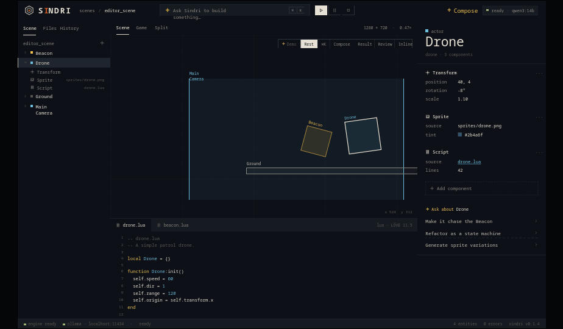
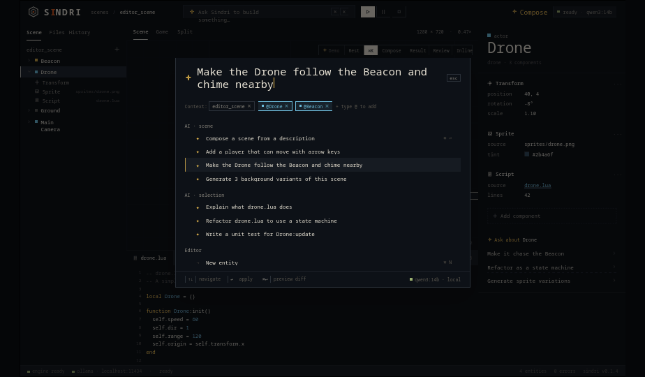
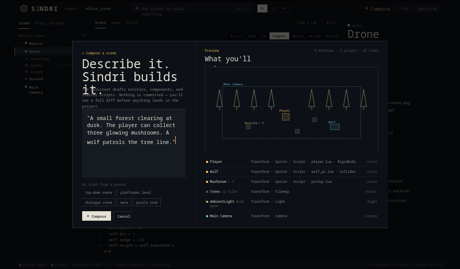
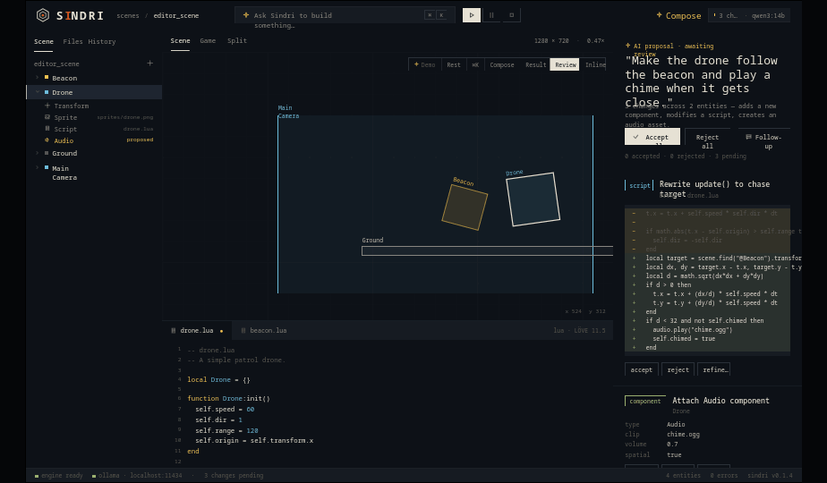
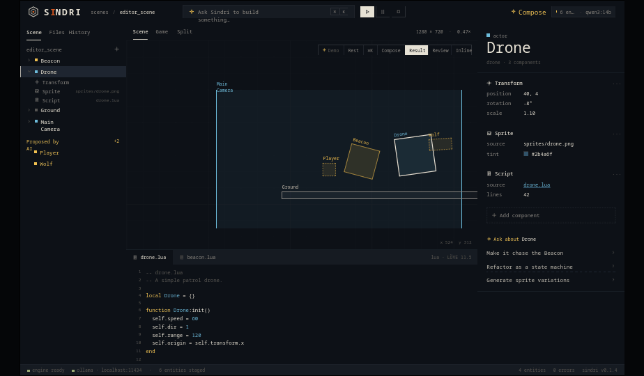
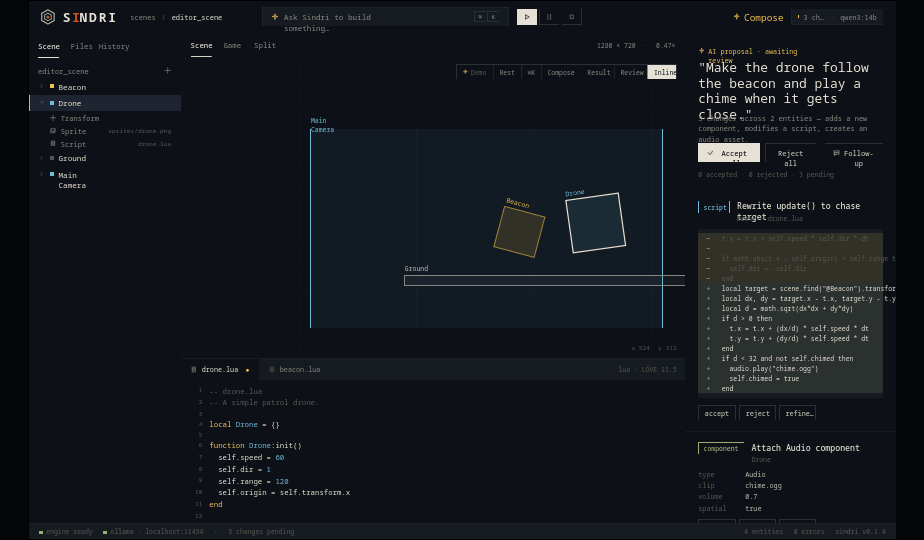

Sindri · AI features brief
An AI that can do everything the user can do — and shows its work.
The starting premise: the local model has access to every part of the engine. It can add, edit, remove entities, components, and scripts. The whole editor is designed around that — the AI is a peer collaborator, not a chat sidebar. These are the features I imagined to make that real.

Sindri Editor v3 · default state with an entity selected
Design principles
-
✦
Natural language is a first-class input. The Cmd-K command bar is the primary entry point. You can do anything from there — add entities, write scripts, refactor, generate assets. The menu bar exists for muscle memory only.
-
✦
Nothing is committed without a diff. The AI never silently mutates your project. Every action lands as a reviewable proposal — entity diffs, script diffs, asset additions. Per-change accept/reject. The history is reversible all the way back.
-
✦
The AI's work appears in the same places as yours. Proposed entities show up in the scene tree as italic ghost rows. Proposed components attach to entities as orange "proposed" rows. Script changes show as inline diffs in the editor. No separate "AI panel" with copy-paste round-trips.
-
✦
Context is explicit and editable. When you ask the assistant something, you can see (and edit) what's in its context — the scene, selected entities, files. Type
@to attach more. -
✦
Local model, no cloud round-trips. Ollama runs the model on-device. The status pill in the topbar always shows which model is loaded and whether it's busy.
Features I designed for
01
Cmd-K command palette
A single global input that accepts both natural-language prompts ("make the drone follow the beacon and chime nearby") and traditional commands ("new entity", "open file…"). Suggestions are grouped by AI · scene, AI · selection, and Editor. Selecting an AI suggestion runs the model with the current context attached.
In the prototype
The palette opens with three context chips already attached — the current scene, plus the two entities being acted on (@Drone, @Beacon). Press ⌘↵ to preview the diff before applying.

⌘K · prompt with attached scene + entity context
02
Scene composer
A full-screen overlay where you describe a scene and the assistant drafts entities, components, and starter scripts — with a live preview before anything lands. Presets ("top-down arena", "platformer level", "dialogue scene") seed the prompt for common starting points.
In the prototype
Click Compose in the topbar. The model drafts six entities (Player, Wolf, three Mushrooms, Trees tilemap, AmbientLight, Main Camera) plus three scripts — all visible in the preview pane before you accept.

The Compose modal · prompt on the left, live preview on the right
03
Proposal review lane
When the AI has staged changes, the inspector is replaced by a proposals lane on the right. Each change has a kind tag (
script, component, asset), a one-line title, the diff, and per-change accept/reject/refine buttons. "Accept all" / "Reject all" at the top. Hovering a script change highlights the affected entity in the viewport.
In the prototype
The Review scenario stages three changes from "make the drone follow the beacon": a rewritten
update(), a new Audio component, and a generated chime.ogg.

Proposals lane · script diff, new component, generated asset — each independently accept/reject
04
Ghost entities in the scene tree
Entities the AI wants to add show up in the scene tree under a "Proposed by AI" section in amber italic. They render in the viewport as dashed amber boxes. They behave like real entities (selectable, inspectable) but they don't exist on disk until you accept.

After Compose · Player + Wolf appear as dashed amber ghosts until accepted
05
Per-entity AI actions
Every selected entity gets a contextual AI block in the inspector: "Make it chase the beacon", "Refactor as a state machine", "Generate sprite variations", "Explain what this entity does". One click runs the appropriate flow with the entity attached as context.
06
Inline ghost suggestions in the script editor
Cursor-style ghost text. As you type a function signature, the model proposes the body in amber italic ghost lines.
Tab accepts. Esc dismisses. ⌘↵ applies the change and writes a one-line explanation in the gutter.

Inline diff in the script editor · amber removed / green added
07
Activity history with full reversibility
The History tab logs every action — yours and the AI's — with timestamps and attribution. AI actions are tagged in amber. Click any row to revert to that point. Branch from history to explore alternate timelines without losing current state.
08
Asset generation
The AI can generate placeholder assets — sprites, audio, tilemaps — when the script it's writing needs them. They appear in the project as
generated · placeholder assets so you can replace them with real art later without breaking references.
09
Context chips
In the command bar, every prompt carries explicit context: the scene, selected entities, open files. Each is a removable chip. Type
@ to add an entity, file, or component. You always know what the model can see.
10
Quiet AI status
A single pill in the topbar shows current AI state: ready (green dot), composing (amber dot + text), 3 changes pending, etc. No banner alerts, no popups. The dot is enough.
Stretch ideas worth considering
-
→
Run-loop probes. When the game is playing, you can ask the AI questions like "why isn't the drone moving?" — it reads the live entity state, the script, and the recent frame's update log to answer.
-
→
Multi-turn refine on a proposal. If a proposal is close but not right, hit "refine…" with feedback — the AI adjusts only the selected change without re-drafting the whole patch.
-
→
Voice-while-playtesting. Hold a hotkey and say "make the wolf faster" while watching the game run. The model pauses the loop, applies a tweak as a proposal, and resumes.
-
→
Variation generator. "Generate 3 variants of this level" produces forked scenes you can flip between to compare playtest feel.
-
→
Explain mode. A toggle that turns every interaction into a teachable moment — when the AI does something, it leaves an inline comment explaining the why. Great for the "kids / learning to code" audience.